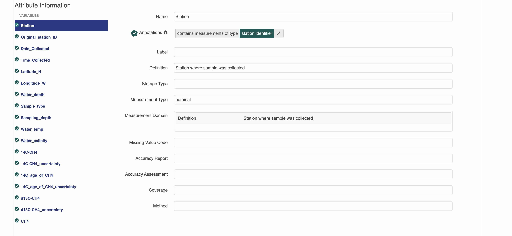
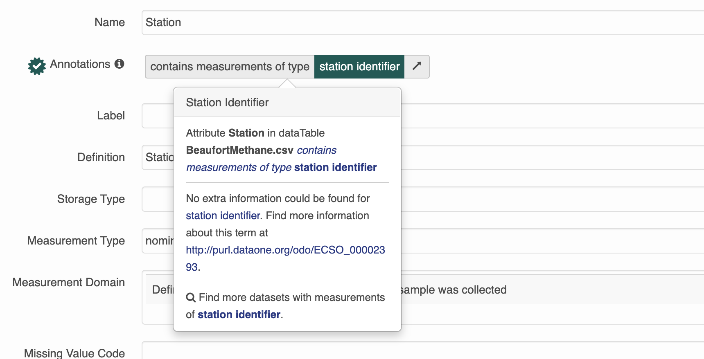

doc$dataset$dataTable[[i]]$attributeList$attribute[[i]]$annotationSemantic annotations
For a brief overview of what a semantic annotation is, and why we use them check out this video.
Even more information on how to add semantic annotations to EML 2.2.0 can be found here. Currently metacatUI does not support the editing of semantic annotations on the website so all changes will have to be done in R.
There are several elements in the EML 2.2.0 schema that can be annotated:
dataset- entity (eg:
otherEntityordataTable) attribute
On the datateam, we will only be adding annotations to attributes for now.
How annotations are used
This is a dataset that has semantic annotations included.
On the website you can see annotations in each of the attributes.

You can click on any one of them to search for more datasets with that same annotation.

Attribute-level annotations
To add annotations to the attributeList you will need information about the propertyURI and valueURI
Annotations are essentially composed of a sentence, which contains a subject (the attribute), predicate (propertyURI), and object (valueURI). Because of the way our search interface is built, for now we will be using attribute annotations that have a propertyURI label of “contains measurements of type”.
Here is what an annotation for an attribute looks like in R. Note that both the propertyURI and valueURI have both a label, and the URI itself.
$id
[1] "ODBcOyaTsg"
$propertyURI
$propertyURI$label
[1] "contains measurements of type"
$propertyURI$propertyURI
[1] "http://ecoinformatics.org/oboe/oboe.1.2/oboe-core.owl#containsMeasurementsOfType"
$valueURI
$valueURI$label
[1] "Distributed Biological Observatory region identifier"
$valueURI$valueURI
[1] "http://purl.dataone.org/odo/ECSO_00002617"
Note
Semantic attribute annotations can be applied to spatialRasters, spatialVectors and dataTables
How to add an annotation
1. Decide which variable to annotate
The goal for the datateam is to start annotating every dataset that comes in. Please make sure to add semantic annotations to spatial and temporal features such as latitude, longitude, site name and date and aim to annotate as many attributes as possible.
2. Find an appropriate valueURI
The next step is to find an appropriate value to fill in the blank of the sentence: “this attribute contains measurements of _____.”
There are several ontologies to search in. In order of most to least likely to be relevant to the Arctic Data Center they are:
- The Ecosystem Ontology (ECSO)
- this was developed at NCEAS, and has many terms that are relevant to ecosystem processes, especially those involving carbon and nutrient cycling
- The Environment Ontology (EnVO)
- this is an ontology for the concise, controlled description of environments
- National Center for Biotechnology Information (NCBI) Organismal Classification (NCBITAXON)
- The NCBI Taxonomy Database is a curated classification and nomenclature for all of the organisms in the public sequence databases.
- Information Artifact Ontology (IAO)
- this ontology contains terms related to information entities (eg: journals, articles, datasets, identifiers)
To search, navigate through the “classes” until you find an appropriate term. When we are picking terms, it is important that we not just pick a similar term or a term that seems close - we want a term that is totally “right”. For example, if you have an attribute for carbon tetroxide flux and an ontology with a class hierarchy like this:
– carbon flux
|—- carbon dioxide flux
Our exact attribute, carbon tetroxide flux is not listed. In this case, we should pick “carbon flux” as it’s completely correct and not “carbon dioxide flux” because it’s more specific but not quite right.
Note
For general attributes (such as ones named depth or length), it is important to be as specific as possible about what is being measured.
e.g. selecting the lake area annotation for the area attribute in this dataset
3. Build the annotation in R
Manually Annotating
this method is great for when you are inserting 1 annotation, fixing an existing annotation or programmatically updating annotations for multiple attributeLists
First you need to figure out the index of the attribute you want to annotate.
eml_get_simple(doc$dataset$dataTable[[3]]$attributeList, "attributeName") [1] "prdM" "t090C" "t190C" "c0mS/cm" "c1mS/cm" "sal00" "sal11" "sbeox0V" "flECO-AFL"
[10] "CStarTr0" "cpar" "v0" "v4" "v6" "v7" "svCM" "altM" "depSM"
[19] "scan" "sbeox0ML/L" "sbeox0dOV/dT" "flag" Next, assign an id to the attribute. It should be unique within the document, and it’s nice if it is human readable and related to the attribute it is describing. One format you could use is entity_x_attribute_y which should be unique in scope, and is nice and descriptive.
doc$dataset$dataTable[[3]]$attributeList$attribute[[6]]$id <- "entity_ctd_attribute_salinity"Now, assign the propertyURI information. This will be the same for every annotation you build.
doc$dataset$dataTable[[3]]$attributeList$attribute[[6]]$annotation$propertyURI <- list(label = "contains measurements of type",
propertyURI = "http://ecoinformatics.org/oboe/oboe.1.2/oboe-core.owl#containsMeasurementsOfType")Finally, add the valueURI information from your search.
 You should see an ID on the Bioportal page that looks like a URL - this is the
You should see an ID on the Bioportal page that looks like a URL - this is the valueURI. Use the value to populate the label element.
doc$dataset$dataTable[[3]]$attributeList$attribute[[6]]$annotation$valueURI <- list(label = "Water Salinity",
valueURI = "http://purl.dataone.org/odo/ECSO_00001164")Shiny Attributes
this method is great for when you are updating many attributes
On the far right of the table of shiny_attributes there are 4 columns: id, propertyURI, propertyLabel, valueURI, valueLabel that can be filled out.
Annotating sensitive data
Sensitive datasets that might cover protected characteristics (human subjects data, endangered species locations, etc) should be annotated using the data sensitivity ontology: https://bioportal.bioontology.org/ontologies/SENSO/?p=classes&conceptid=root.
Dataset Annotations
As a final step in the data processing pipeline, we will categorize the dataset. We are trying to categorize datasets so we can have a general idea of what kinds of data we have at the Arctic Data Center.
Datasets will be categorized using the Academic Ontology. These annotations will be seen at the top of the landing page, and can be thought of as “themes” for the dataset. In reality, they are dataset-level annotations.
Be sure to ask your peers in the #datateam slack channel whether they agree with the themes you think best fit your dataset. Once there is consensus, use the following line of code:
doc <- datamgmt::eml_categorize_dataset(doc, c("list", "of", "themes"))